Path & Query Parameters
Why do APIs need parameters?
app/main.py), run with uvicorn app.main:app --reload. Leave the server running and just save the file after each change.Quick recap: what is a route?
A route connects a URL path to a Python function:
@app.get("/about")
def about():
return {"message": "About Page"}When a request comes in, FastAPI compares its path (e.g. /about) with the path of every route. If one matches, it runs that function; if none does, it returns 404 Not Found. How it compares depends on whether the route is static or dynamic.
Static routes
A static route has a completely fixed path, such as /about, /contact, /students or /students/1. FastAPI runs it only when the URL is exactly the same, character for character. Even a small difference means no match.
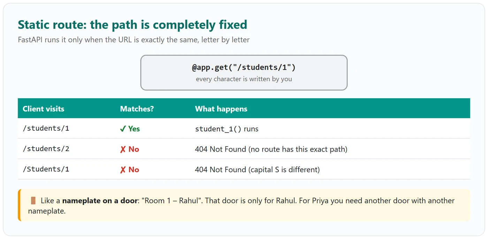
/students/1 matches, but /students/2 and even /Students/1 (capital S) get 404.Static routes are perfect for things that never change, like an About page, a Contact page or the list of all students.
The problem with static routes
To show one student at a time by id, static routes force you to write one route per student. This causes real problems:
/students/1 → student_1()
/students/2 → student_2()
/students/3 → student_3()
... → ...Repeated code
Every function does the same job; only the number changes.
New student = new code
Every admission means writing code and restarting the app.
Impossible at scale
A college with 5,000 students needs 5,000 functions.
Missing routes break
Forget /students/4 and that student just gets a 404.
Look closely: /students/ is always the same and only the number at the end changes. What if we wrote the fixed part once and left a blank for the number?
Dynamic routes
A dynamic route has two parts: a fixed part that must match exactly (/students/), and a changing part in curly brackets ({student_id}). The curly part is a placeholder, a blank filled with whatever the client sends.
@app.get("/students/{student_id}")When a request comes in, FastAPI checks the fixed part first. If it matches, FastAPI takes whatever is written in the place of the blank and gives it to your function in a variable named student_id.
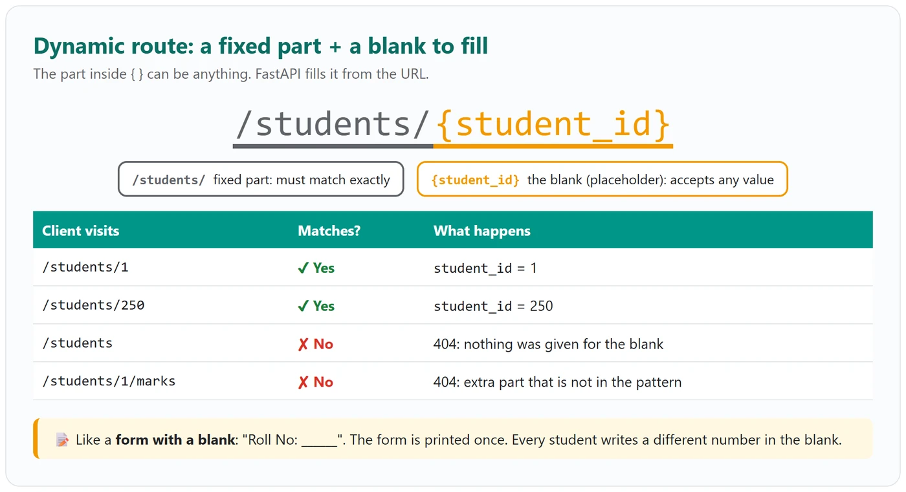
/students (nothing in the blank) and /students/1/marks (extra part) don’t match.So one dynamic route can answer /students/1, /students/2, /students/250, and every other student, with one function.
| Static route | Dynamic route | |
|---|---|---|
| Path | Completely fixed: /students/1 | Fixed part + blank: /students/{student_id} |
| URLs it matches | Exactly one | Many: any value in the blank |
| Value from the URL | Nothing is passed to the function | The value in the blank is passed to the function |
| Best for | Pages that never change: /about, /students | One item out of many |
So, what is an API parameter?
The value the client puts in the blank (like 250 in /students/250) is a parameter: an extra piece of information sent with the request so the API knows exactly what to return. FastAPI has two main kinds:
| Kind | Where it goes | Example | Answers |
|---|---|---|---|
| Path parameter | Inside the path, in the blank | /students/250 | Which item? |
| Query parameter | At the end, after ? | /students?course=BCA | How should the list come back? |
Practical: from static routes to one dynamic route
Step 1: static routes, one per student:
from fastapi import FastAPI
app = FastAPI()
@app.get("/students/1")
def student_1():
return {"id": 1, "name": "Rahul"}
@app.get("/students/2")
def student_2():
return {"id": 2, "name": "Priya"}
@app.get("/students/3")
def student_3():
return {"id": 3, "name": "Aman"}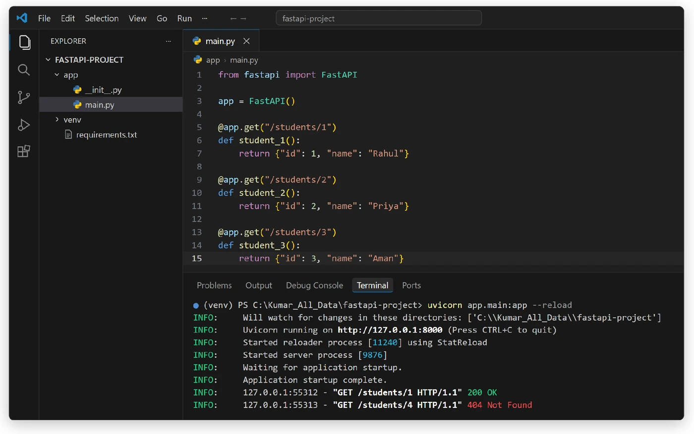
/students/1 → 200 OK, /students/4 → 404 Not Found.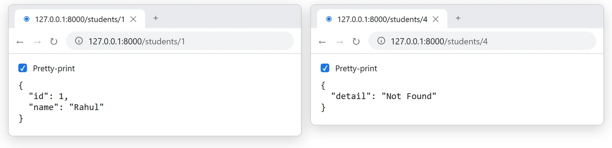
/students/1, {"detail": "Not Found"} for /students/4./students/1 works because a route with that exact path exists. /students/4 gives 404 Not Found, because no route has that exact path. This is exactly the problem described above.
Step 2: replace all of them with one dynamic route:
from fastapi import FastAPI
app = FastAPI()
@app.get("/students/{student_id}")
def get_student(student_id: int):
return {"student_id": student_id}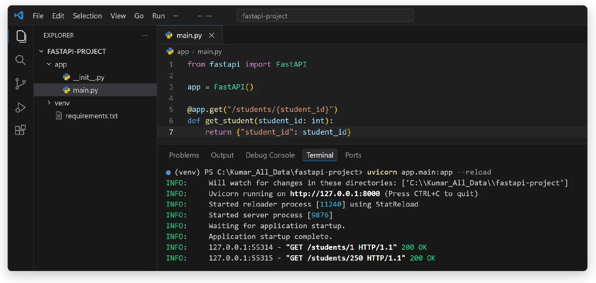
/students/1 and /students/250 with 200 OK.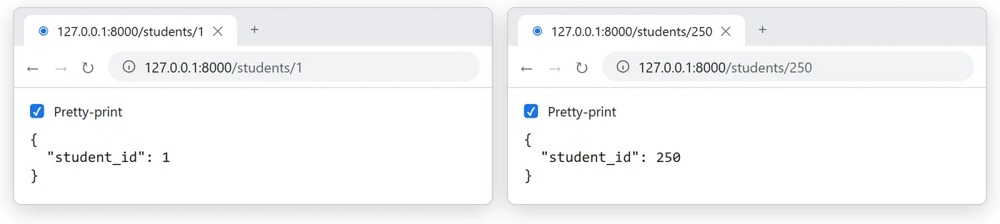
{"student_id": 1} and {"student_id": 250}.For /students/250, FastAPI matched the fixed part /students/, put 250 into the blank {student_id}, and called get_student(student_id=250). The function simply returned the value it received.
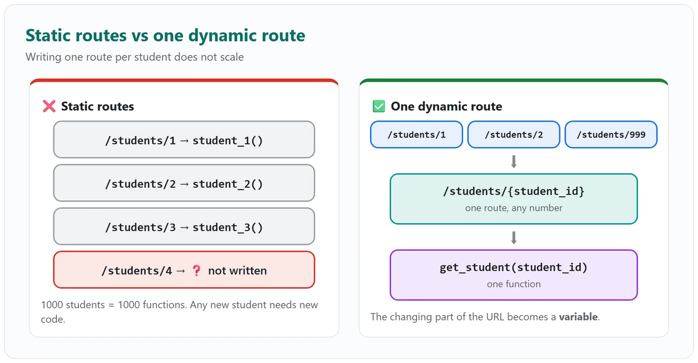
{blank}, many URLs. The value in the blank is a path parameter.Path parameters: pick one specific item
A path parameter is a changing value written directly inside the URL path. It tells the API which specific item you want.
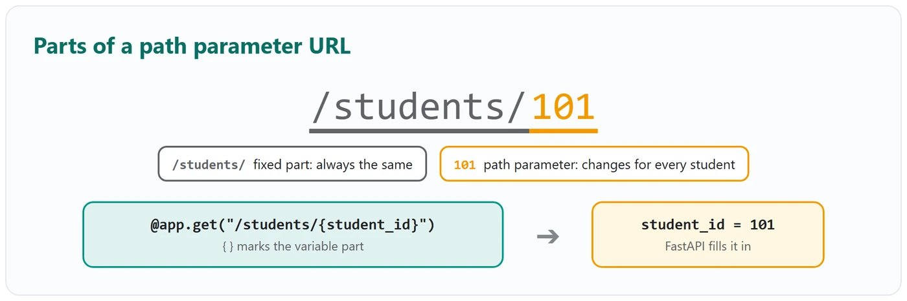
/students/ is always the same; 101 changes for every student, and FastAPI fills it into student_id.In FastAPI, mark the changing part with { } and add a function parameter with the same name:
@app.get("/students/{student_id}")
def get_student(student_id: int):
return {"student_id": student_id}{student_id}in the route means “this part of the URL can change”.student_id: intin the function means “give me that value, as an integer”.- The two names must match exactly.
How path parameters work
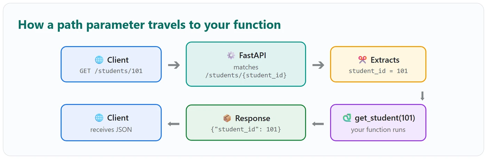
student_id = 101 → your function runs → JSON response.When are path parameters used?
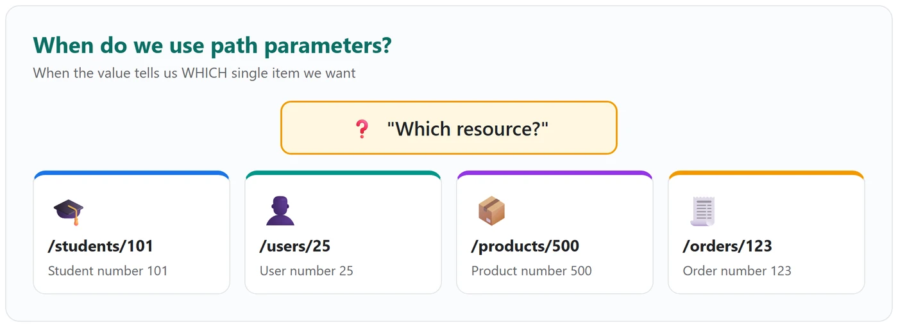
Setting up practice data
To do something useful with parameters we need some data. Add this list at the top of main.py, just below app = FastAPI():
students = [
{"id": 1, "name": "Rahul", "age": 21, "course": "BCA"},
{"id": 2, "name": "Priya", "age": 22, "course": "BTech"},
{"id": 3, "name": "Aman", "age": 20, "course": "BCA"},
{"id": 4, "name": "Sneha", "age": 21, "course": "BTech"}
]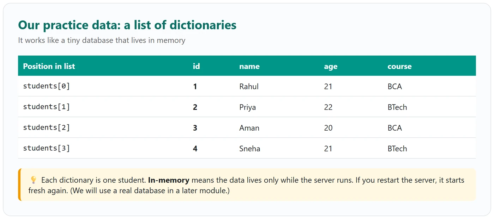
Now add a route that returns the complete list. (Remove the earlier test routes so the file stays clean.)
@app.get("/students")
def get_all_students():
return students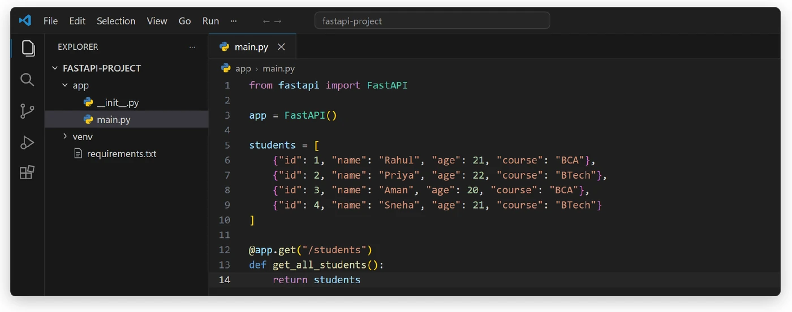
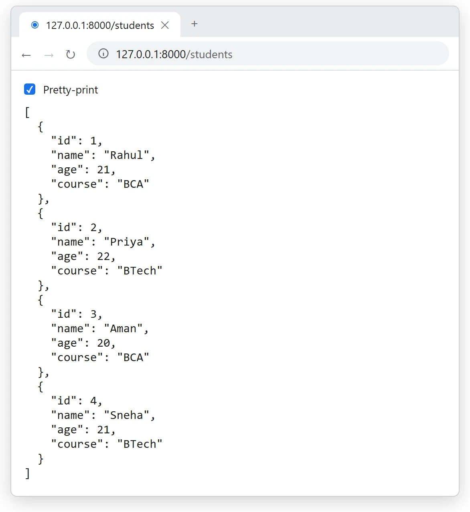
/students returns all four students.We reuse this students list for the whole note.
Fetch a student by id
Goal: GET /students/2 returns only Priya. Add below get_all_students():
@app.get("/students/{student_id}")
def get_student(student_id: int):
for student in students:
if student["id"] == student_id:
return student
return {"message": "Student not found"}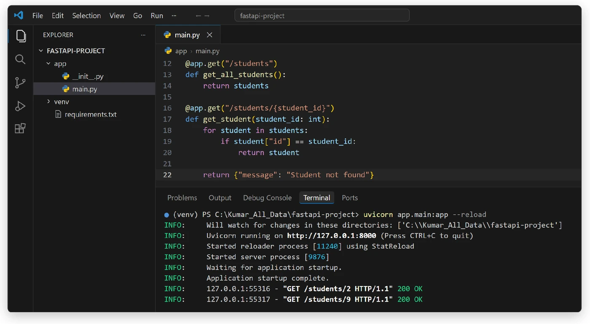
/students/9.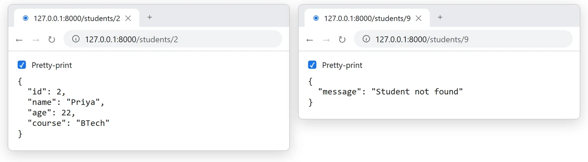
/students/2 → Priya; /students/9 → “Student not found”.How /students/2 becomes student_id = 2
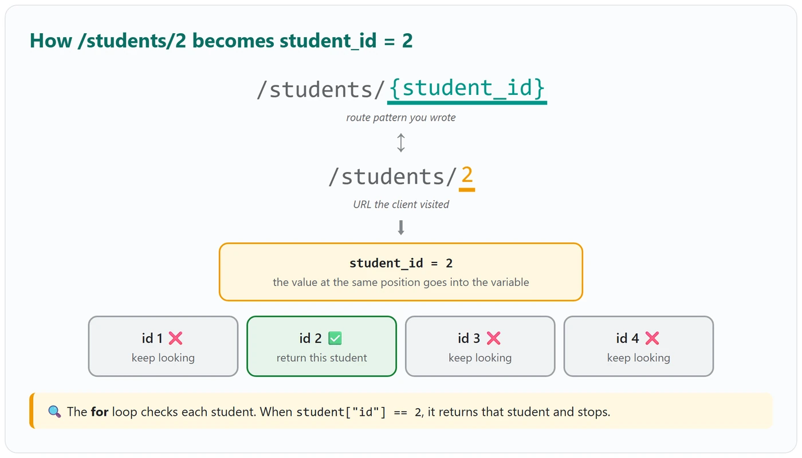
for loop stops at the student whose id is 2.- 1RequestThe client visits
/students/2. - 2MatchFastAPI compares it with
/students/{student_id}and takes2from the blank’s position. - 3Convert and callIt turns
"2"into the integer2(because of: int) and callsget_student(student_id=2). - 4FindThe loop finds the student whose id is 2 and returns Priya.
- 5Not foundFor
/students/9the loop finds nobody, so the last line runs. → still 200 OK
HTTPException.Type conversion and validation
String vs integer
Why write student_id: int? Remove : int and add a print() to see the value and its type in the terminal:
@app.get("/students/{student_id}")
def get_student(student_id):
print(student_id, type(student_id))
for student in students:
if student["id"] == student_id:
return student
return {"message": "Student not found"}2 <class 'str'>.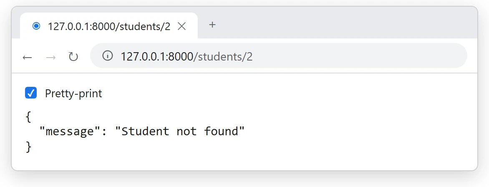
Priya exists, yet we get “Student not found”! The terminal explains why: 2 <class 'str'>. Everything in a URL is text, so student_id is the string "2", and in Python "2" == 2 is False. The loop never finds a match.
Now put the type back, def get_student(student_id: int):, and try again:
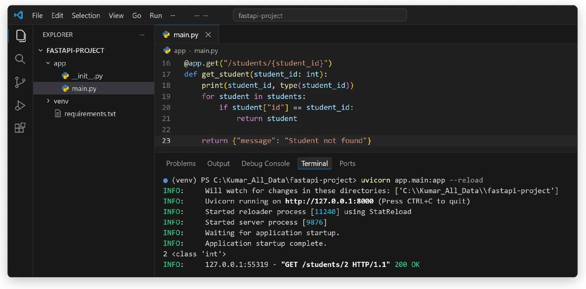
" width="1400" height="691">2 <class 'int'>.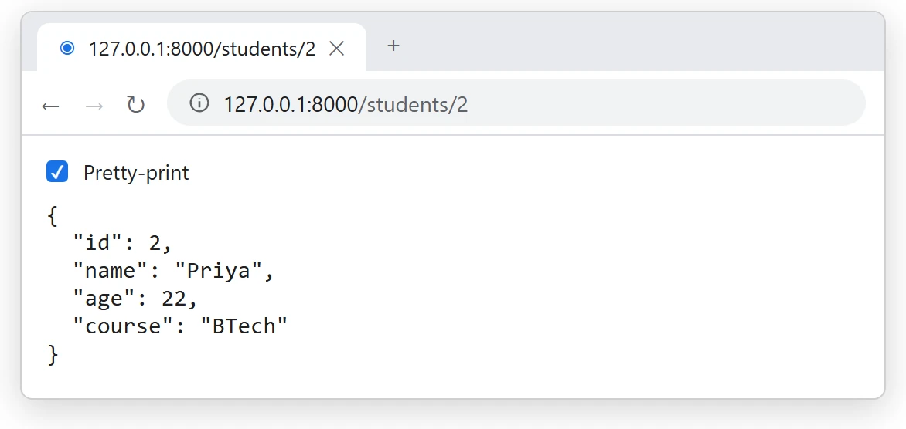
This time the terminal prints 2 <class 'int'>. FastAPI read the type hint and converted the text to a number for us, so the comparison works.
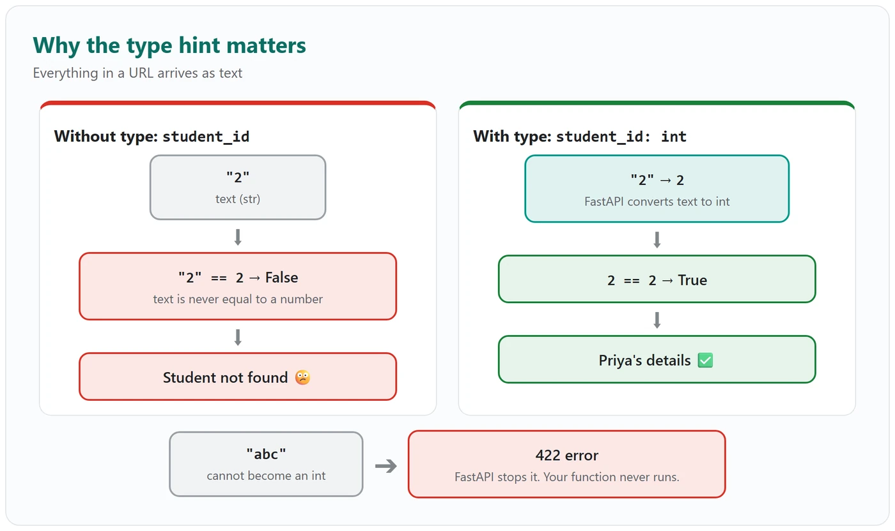
: int it is converted, and impossible values like "abc" are stopped with a 422.print() line. It was only for learning.Invalid input
What if the value cannot become a number?
http://127.0.0.1:8000/students/abc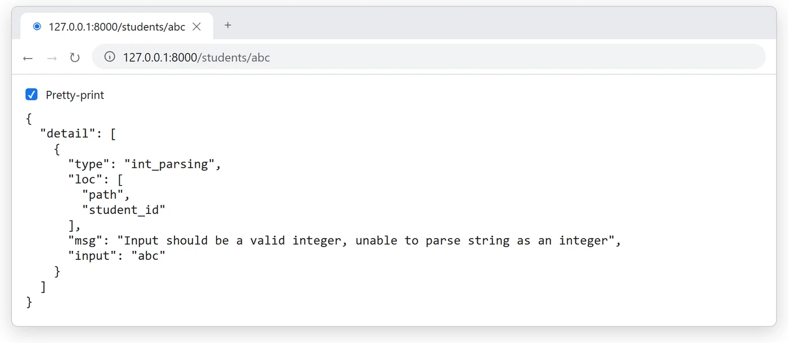
int_parsing), where it is (path → student_id) and what was sent ("abc").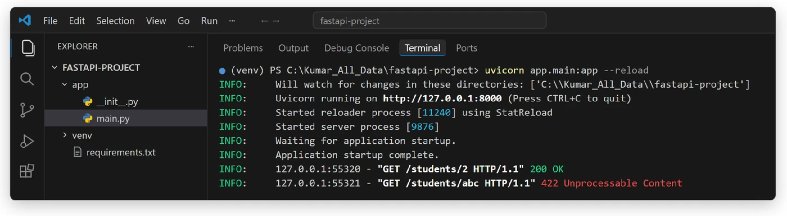
FastAPI rejected the request before our function even ran, with status 422 Unprocessable Content. "loc": ["path", "student_id"] says exactly where the problem is. (That message should look familiar: FastAPI uses Pydantic under the hood to do this checking.)
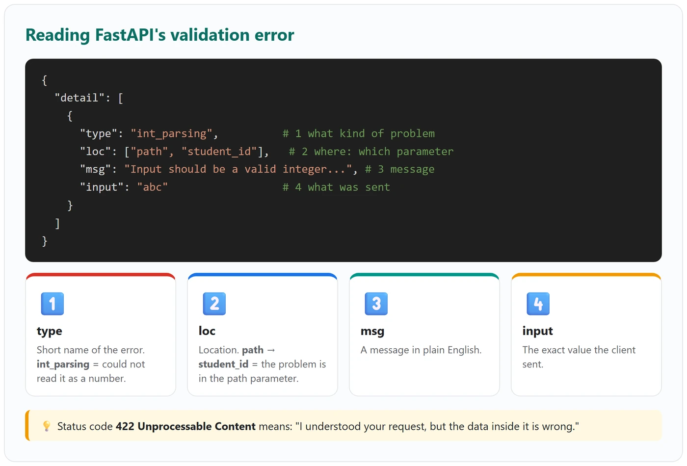
"2" → 2) and rejects bad input ("abc" → 422). You get both for free.Multiple path parameters and route order
A URL can carry more than one path parameter, for example “course 5 of student 2”:
student_id = 2
course_id = 5
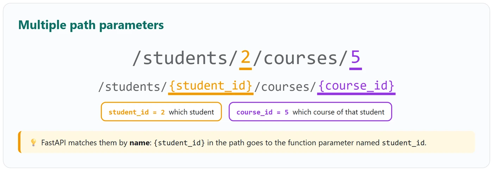
{student_id} in the path goes to the function parameter named student_id.Add this route:
@app.get("/students/{student_id}/courses/{course_id}")
def get_course(student_id: int, course_id: int):
return {
"student_id": student_id,
"course_id": course_id
}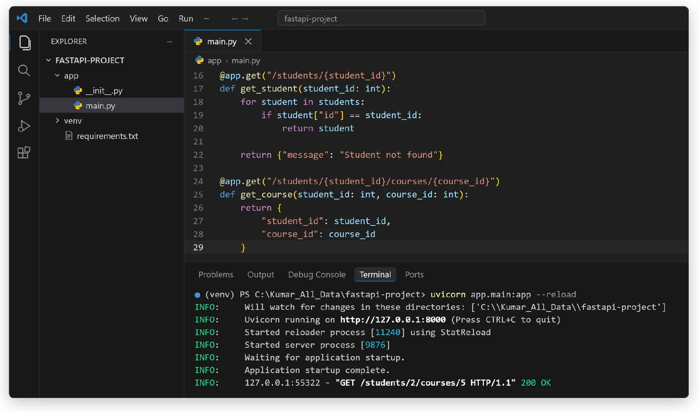
get_student.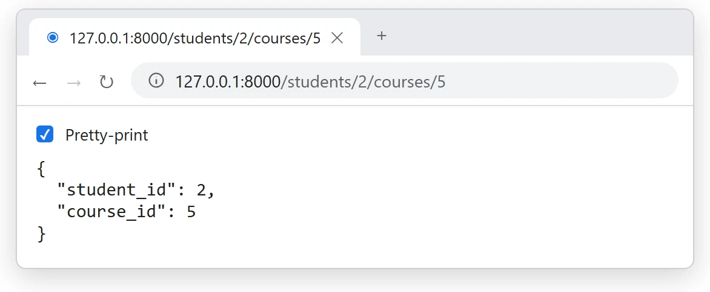
{"student_id": 2, "course_id": 5}Each { } needs a function parameter with the same name. Both are converted and checked separately, so /students/2/courses/abc gives a 422 that points at course_id:
{"detail": [{"type": "int_parsing", "loc": ["path", "course_id"],
"msg": "Input should be a valid integer, unable to parse string as an integer", "input": "abc"}]}Route order: fixed before dynamic
Many apps have a special URL /students/me meaning “the logged-in student”. It looks very similar to /students/{student_id}. Add it below the dynamic route:
from fastapi import FastAPI
app = FastAPI()
@app.get("/students/{student_id}")
def get_student(student_id: int):
return {"student_id": student_id}
@app.get("/students/me")
def get_current_student():
return {"message": "This is the logged-in student"}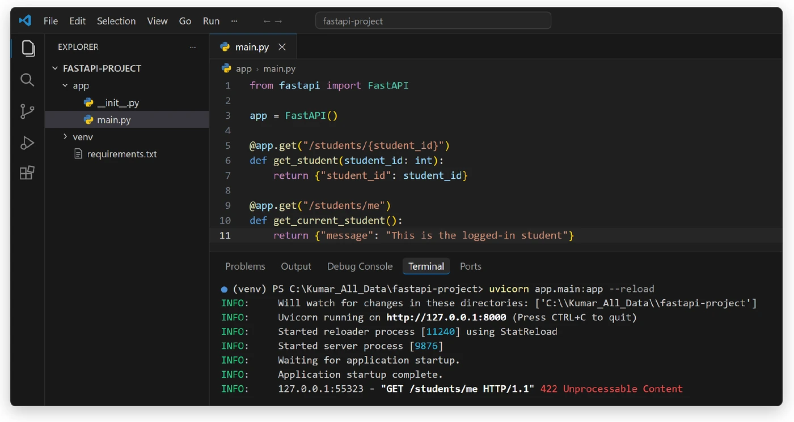
/students/me → 422.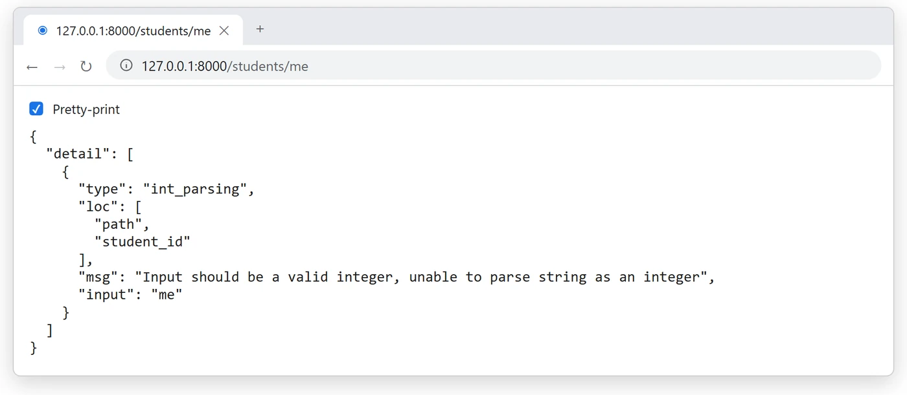
"me" could not be parsed as the integer student_id.A 422 saying "me" is not a valid integer! FastAPI checks routes from top to bottom and uses the first whose pattern fits. me fits into {student_id}, so FastAPI picks that route and then fails to turn "me" into a number. Our /students/me route is never reached.
Now move the fixed route above the dynamic one:
from fastapi import FastAPI
app = FastAPI()
@app.get("/students/me")
def get_current_student():
return {"message": "This is the logged-in student"}
@app.get("/students/{student_id}")
def get_student(student_id: int):
return {"student_id": student_id}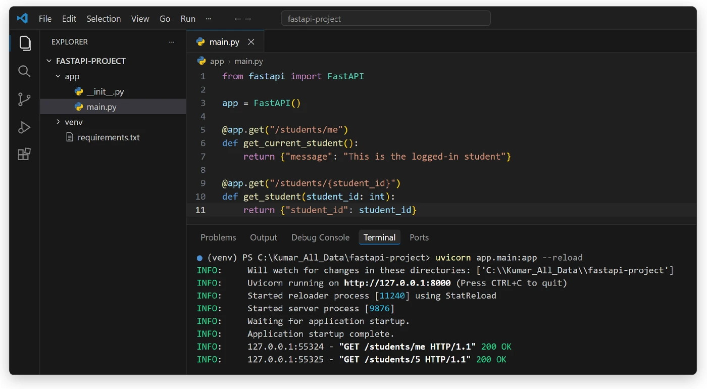
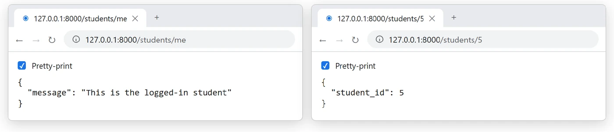
/students/me hits the fixed route, and /students/5 still goes to the dynamic route.Both work now: /students/me hits the fixed route, and /students/5 still goes to the dynamic route.
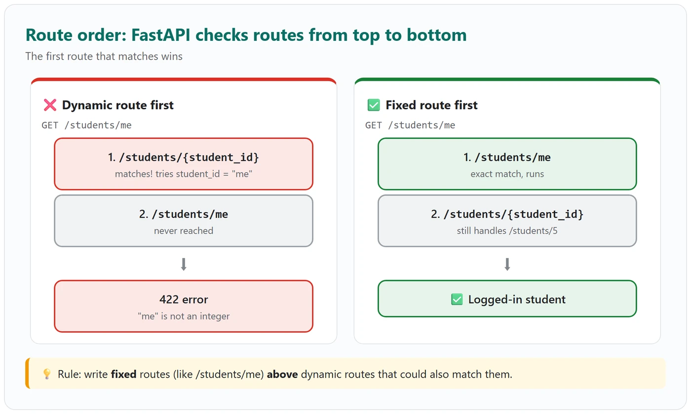
/students/me) above dynamic routes that could also match them.Query parameters: how you want the list
Path parameters answer “which one?”. Often we want a list, filtered or arranged a certain way: “show me only BCA students”. For that we use the second kind of parameter.
A query parameter is a key=value pair added at the end of the URL, after a question mark ?. It gives extra instructions such as filtering, searching, sorting or pagination.
Host and port: where the server is.
Path: the main resource, /students.
? starts the query string; & joins one pair to the next.
Key: the parameter name (course, age).
Value: what the client wants for that key.
In /students?course=BCA: /students is the main path, ? marks where the query parameters begin, and course=BCA is the query parameter (key course, value BCA).
Query parameter structure
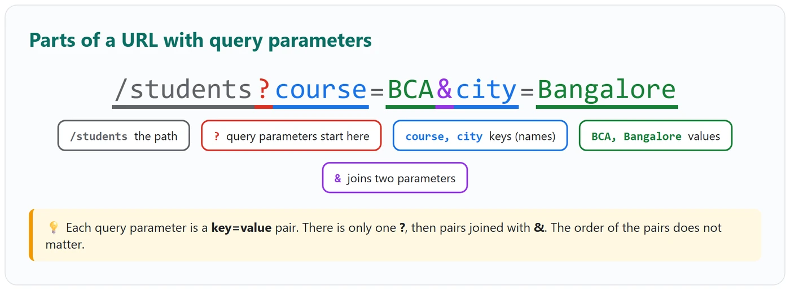
?, then pairs joined with &. The order of the pairs does not matter.When are query parameters used?
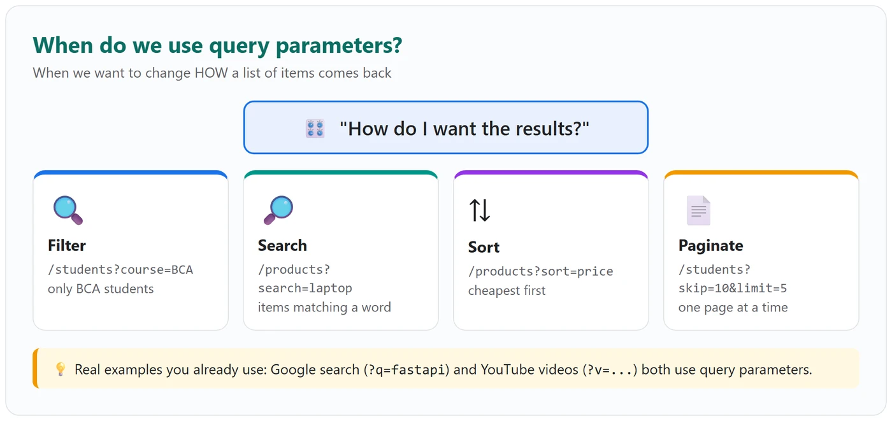
?q=fastapi) and YouTube (?v=...).First practical example
Change the get_all_students() route into this (keep the students list):
@app.get("/students")
def get_students(course: str):
return {"course": course}Notice: the route is just "/students". There is no {course} in it, yet the function has a course parameter.
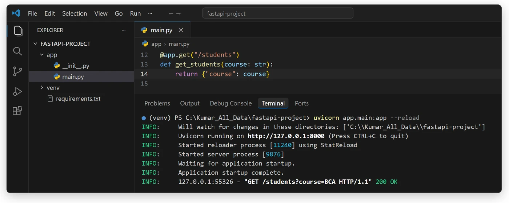
{course}, yet the request works.Visit /students?course=BCA:
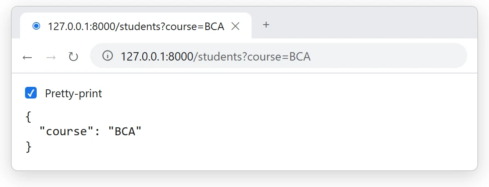
{"course": "BCA"}FastAPI read course=BCA from the URL and passed course="BCA" to the function automatically. How did it know this was a query parameter?
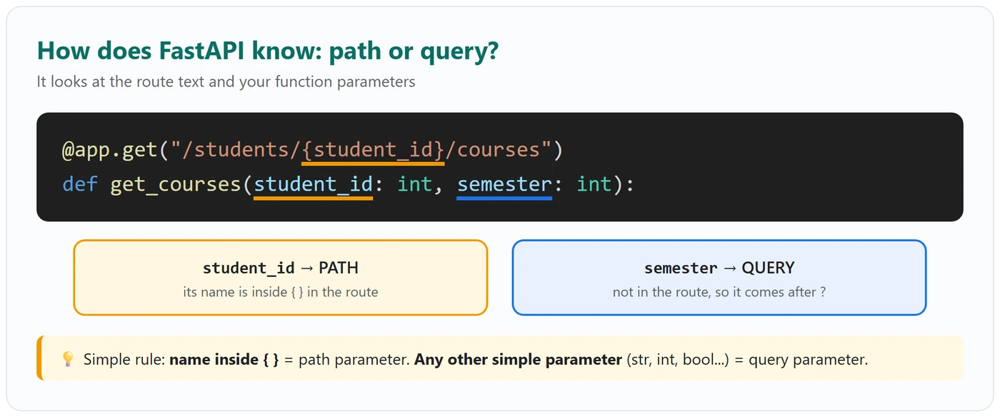
{ } = path parameter. Any other simple parameter (str, int, bool…) = query parameter.The full rule FastAPI follows for every function parameter has one more branch:
{ } → path. A simple type, not in the route → query. A Pydantic model or dict → request body.That last branch is why book: dict in the previous note was read from the request body.
What if we forget the query parameter?
Visit plain /students (no ?course=):
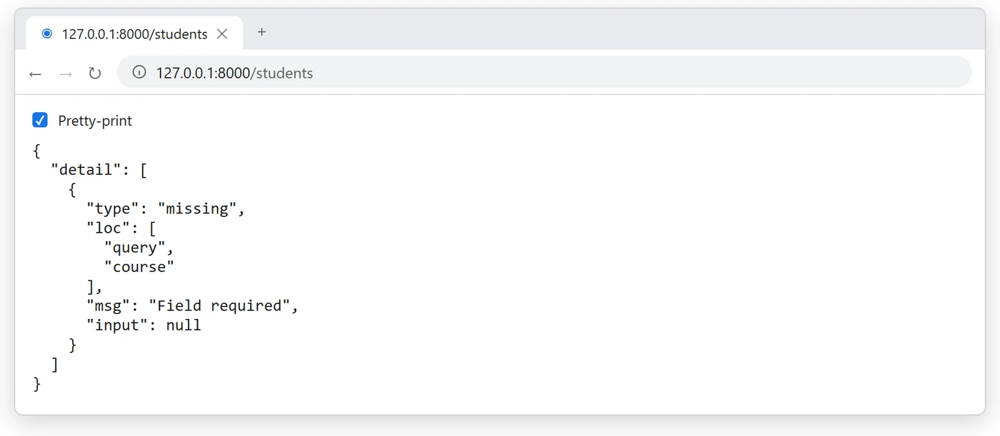
"loc": ["query", "course"], "msg": "Field required".Because course: str has no default, the parameter is required, and FastAPI answers 422. "loc": ["query", "course"] and "msg": "Field required" tell us exactly what is missing. We fix this shortly with default values.
Filtering, optional parameters and defaults
Use the value to filter
Returning {"course": "BCA"} is not very useful. Let’s use the value to filter real data:
@app.get("/students")
def get_students(course: str):
result = []
for student in students:
if student["course"] == course:
result.append(student)
return result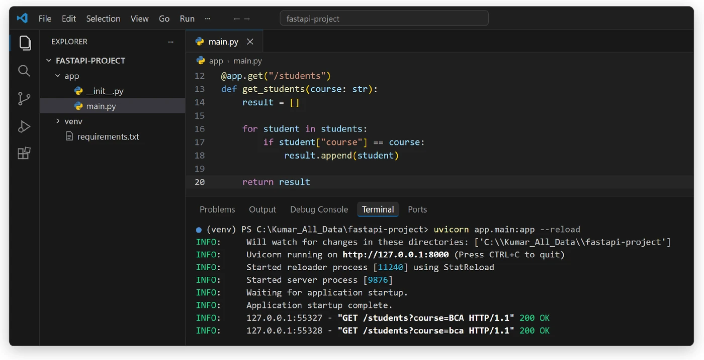
BCA and bca.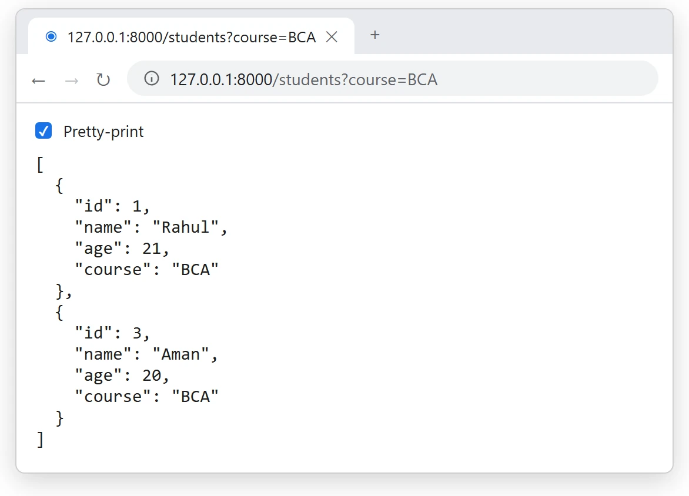
/students?course=BCA → Rahul and Aman.Only Rahul and Aman (the BCA students) come back. This is why query parameters exist: the same route returns different results based on what the client asks.
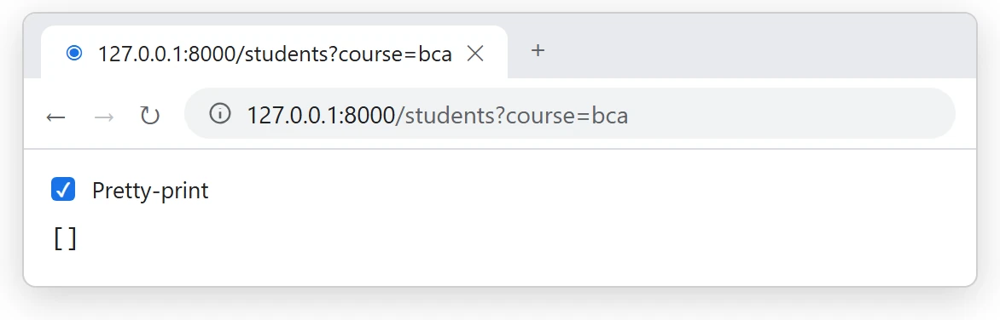
bca → []./students?course=bca returns an empty list [], because "bca" != "BCA" in Python. An empty list is still a valid answer: “I searched, and nothing matched.”Making the filter optional
We want /students to return everyone and /students?course=BCA only BCA students. So course must be optional:
@app.get("/students")
def get_students(course: str | None = None):
if course:
return [
student for student in students
if student["course"] == course
]
return studentsstr | Nonemeans “a string, or nothing”.= Nonemeans “if the client doesn’t send it, useNone”. The default is what makes it optional.if course:is true only when a course was actually sent; otherwise we return the whole list.
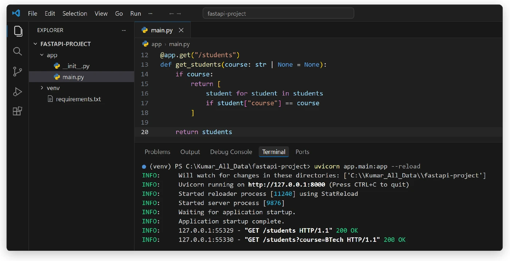
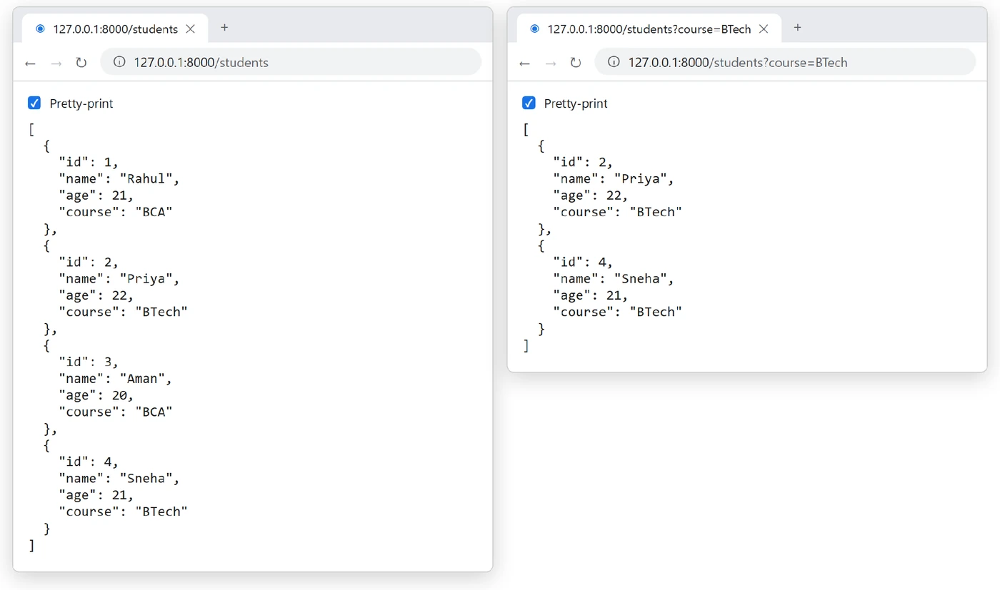
/students → all 4 students; /students?course=BTech → Priya and Sneha.Both URLs work now with one function.
Default values
A query parameter can also have a normal default. To see it clearly, use a small default of 2:
@app.get("/students")
def get_students(limit: int = 2):
return {"limit": limit, "students": students[:limit]}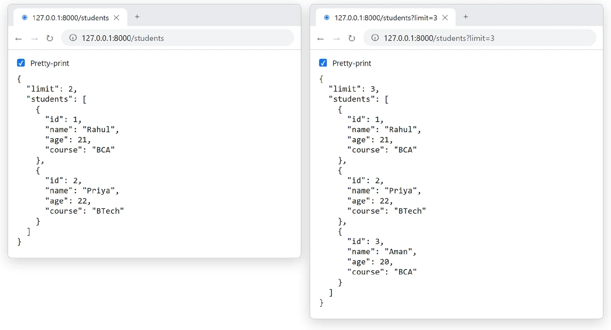
?limit= → the default 2; ?limit=3 → three students.Without ?limit=, FastAPI uses the default 2. With ?limit=3, the client’s value wins. Real APIs usually use something like limit: int = 10.
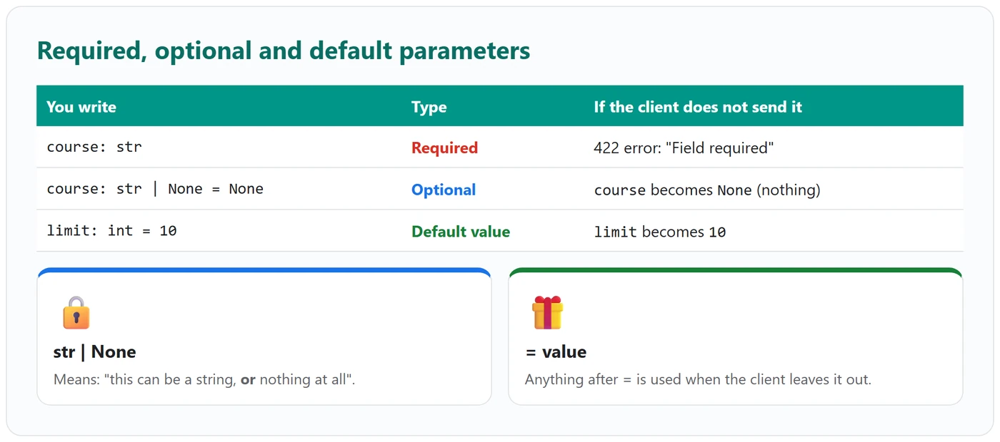
str | None means “a string, or nothing at all”; anything after = is used when the client leaves it out.Multiple query parameters
Clients often combine filters, for example “BCA students who are 21”. Pairs are joined with &:
@app.get("/students")
def get_students(
course: str | None = None,
age: int | None = None
):
result = students
if course:
result = [
student for student in result
if student["course"] == course
]
if age:
result = [
student for student in result
if student["age"] == age
]
return resultWe start with all students in result, and each filter that was sent makes the list smaller.
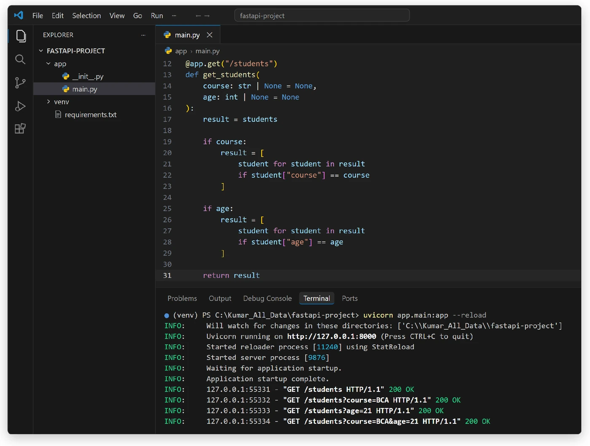
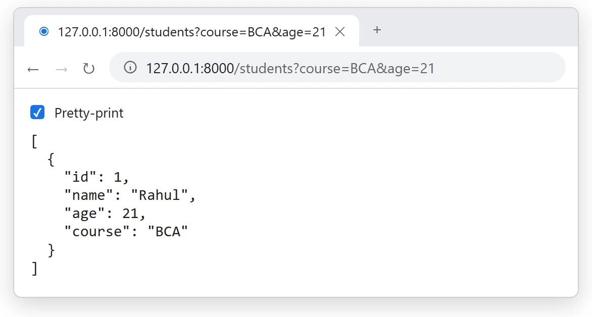
?course=BCA&age=21 → only Rahul.| Request | Result |
|---|---|
/students | All 4 students |
/students?course=BCA | Rahul, Aman |
/students?age=21 | Rahul, Sneha |
/students?course=BCA&age=21 | Rahul |
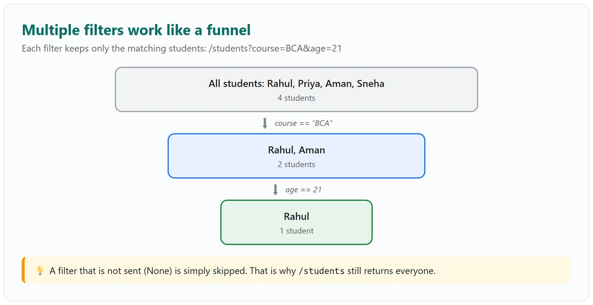
None) is simply skipped, which is why /students still returns everyone.Notice that age was declared as int, so ?age=21 was converted to the number 21 automatically, just like path parameters.
if age: is False for 0 as well as for None, so ?age=0 would be ignored. When 0 is a meaningful value, write if age is not None: instead.Pagination with skip and limit
Imagine 50,000 students. Sending all of them in one response is slow for the server, heavy on the network and useless for the user, who sees about 10 on screen. So we send data one page at a time. This is pagination.
| Parameter | Meaning |
|---|---|
skip | How many records to jump over |
limit | How many records to return |
@app.get("/students")
def get_students(
skip: int = 0,
limit: int = 10
):
return students[skip:skip + limit]students[skip:skip + limit] is normal Python list slicing. For skip=2, limit=2 it becomes students[2:4]: the items at index 2 and 3.
Browser output
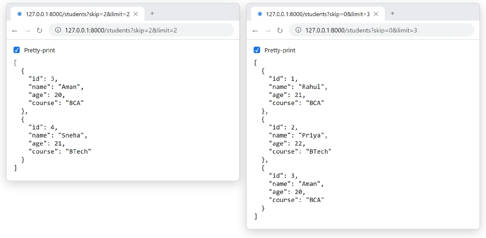
?skip=2&limit=2 → Aman, Sneha. ?skip=0&limit=3 → the first three.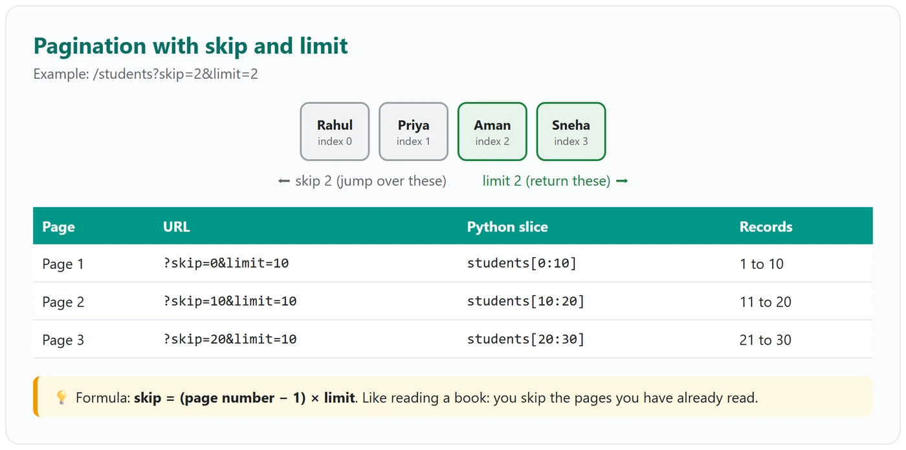
| Try this | You get | Why |
|---|---|---|
/students | All 4 | Defaults: skip=0, limit=10 |
/students?skip=2&limit=2 | Aman, Sneha | Skip 2, then take 2 |
/students?skip=0&limit=3 | Rahul, Priya, Aman | First 3 records |
/students?skip=3&limit=10 | Sneha | Only 1 record left after skipping 3 |
/students?skip=10 | [] | Skipped past the end of the list |
offset/limit, the same idea as skip/limit. When you pull their data, loop page by page until you get an empty list, instead of assuming one call returns everything.Path and query together, and how to tell them apart
Both kinds can appear in the same URL, for example “the courses of student 2, but only for semester 4”:
Path parameter student_id: inside { } in the route, required.
Query parameter semester: not in the route, optional here.
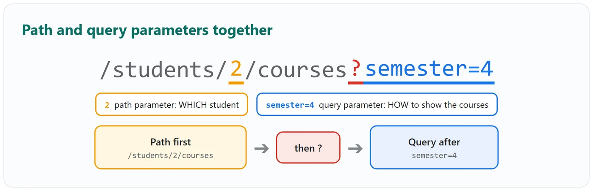
/students/2/courses), then ?, then the query (semester=4).@app.get("/students/{student_id}/courses")
def get_courses(
student_id: int,
semester: int | None = None
):
return {
"student_id": student_id,
"semester": semester
}?semester=4."semester": 4. Without it: "semester": null.Without ?semester=4 the value is Python None, which appears as null in JSON.
Path vs query, side by side
/products/500 = “show me product 500”. /products?category=laptop = “show me products, but only laptops”.| Path parameter | Query parameter | |
|---|---|---|
| Question it answers | Which resource? | How do I want the resources? |
| Where in the URL | Inside the path: /students/25 | After ?: /students?course=BCA |
| Usually | Required | Optional |
| Returns | One specific item | A filtered / sorted / paged list |
| In FastAPI | Name inside { } in the route | Function parameter not in the route |
Practice: identify the parameter type
Answer first, then open each one to check.
/students/25
Path (25 = which student).
/students?course=BCA
Query (filter by course).
/students/25/courses/4
Two path parameters (student 25, course 4).
/students?course=BCA&age=21
Two query parameters (two filters).
/students?skip=10&limit=20
Two query parameters (pagination).
/students/25/courses?semester=4
Path (25) + query (semester=4).
Final project: Student Search API
Build one API that uses everything from this note. Each student has id, name, age, course, city, year.
from fastapi import FastAPI
app = FastAPI()
students = [
{"id": 1, "name": "Rahul", "age": 21, "course": "BCA",
"city": "Bangalore", "year": 2},
{"id": 2, "name": "Priya", "age": 22, "course": "BTech",
"city": "Delhi", "year": 3},
{"id": 3, "name": "Aman", "age": 20, "course": "BCA",
"city": "Bangalore", "year": 1},
{"id": 4, "name": "Sneha", "age": 21, "course": "BTech",
"city": "Mumbai", "year": 2},
{"id": 5, "name": "Karan", "age": 22, "course": "BCA",
"city": "Bangalore", "year": 2},
{"id": 6, "name": "Neha", "age": 20, "course": "BCom",
"city": "Delhi", "year": 1},
{"id": 7, "name": "Arjun", "age": 23, "course": "BTech",
"city": "Bangalore", "year": 4},
{"id": 8, "name": "Pooja", "age": 21, "course": "BCA",
"city": "Mumbai", "year": 2}
]
courses = {
1: {4: ["Python", "DBMS", "Computer Networks"]},
5: {4: ["Java", "Operating Systems", "Web Development"]}
}
@app.get("/students")
def get_students(
course: str | None = None,
city: str | None = None,
year: int | None = None,
skip: int = 0,
limit: int = 10
):
result = students
if course:
result = [s for s in result if s["course"] == course]
if city:
result = [s for s in result if s["city"] == city]
if year:
result = [s for s in result if s["year"] == year]
return result[skip:skip + limit]
@app.get("/students/{student_id}")
def get_student(student_id: int):
for student in students:
if student["id"] == student_id:
return student
return {"message": "Student not found"}
@app.get("/students/{student_id}/courses")
def get_student_courses(student_id: int, semester: int | None = None):
student_courses = courses.get(student_id, {})
if semester:
return {
"student_id": student_id,
"semester": semester,
"subjects": student_courses.get(semester, [])
}
return {"student_id": student_id, "courses": student_courses}How it works
get_students()handles every/students?...request. Each filter is optional and applied only if sent. Pagination (skip,limit) is applied last, on the filtered result.get_student()uses a path parameter to return one student.get_student_courses()combines a path parameter (student_id) with an optional query parameter (semester).coursesis a small dictionary: student id → semester → list of subjects.
Run it
uvicorn app.main:app --reloadTest the endpoints
A specific student and multiple filters:
/students/3 → Aman. ?course=BCA&city=Bangalore → Rahul, Aman, Karan.Combined search and path + query together:
/students/1/courses?semester=4 → three subjects.When nothing matches:
[].| Request | Result |
|---|---|
GET /students | All 8 students |
GET /students/3 | Aman |
GET /students?course=BCA | Rahul, Aman, Karan, Pooja |
GET /students?course=BCA&city=Bangalore | Rahul, Aman, Karan |
GET /students?skip=0&limit=5 | First 5 students |
GET /students?course=BCA&year=2&city=Bangalore&skip=0&limit=5 | Rahul, Karan |
GET /students/1/courses?semester=4 | Python, DBMS, Computer Networks |
GET /students/20 | {"message": "Student not found"} |
GET /students?city=Pune | [] (nothing matches) |
Without ?semester=, the same route returns the whole dictionary for that student:
GET /students/1/courses
{"student_id": 1, "courses": {"4": ["Python", "DBMS", "Computer Networks"]}}Notice that the dictionary key 4 became the string "4": JSON object keys are always strings.
Final challenge
Without looking at the notes, build this API yourself, then explain with real requests:
Try it yourself
- Add an
agefilter toget_students()and test/students?course=BTech&age=21. - Add a fixed route
GET /students/countthat returns the total number of students. Where must you place it, and why? - Visit
/students?year=two. Which error do you get, and what doesloctell you? - Show page 2 of all students with 3 per page. What are
skipandlimit?
Check your answers
/students/count must go above /students/{student_id}, or count is caught by the dynamic route and fails int conversion (422). ?year=two gives 422 with "loc": ["query", "year"]: the bad value is in the query string, in the year parameter. Page 2, 3 per page: skip=3&limit=3 (Sneha, Karan, Neha).
Common mistakes and quick revision
| What you see | Why it happens | Fix |
|---|---|---|
| Always “Student not found” | No type hint, so the id stays text ("2" != 2) | Write student_id: int |
422 with "loc": ["path", ...] | The URL value cannot be converted (e.g. abc) | Send a value of the correct type |
422 with "msg": "Field required" | A required query parameter is missing | Send it, or give it a default (= None) |
/students/me gives a 422 | The dynamic route is written above the fixed route | Move /students/me above /students/{student_id} |
Filter returns [] | Case or spelling differs (bca vs BCA) | Send the exact value |
| Second parameter ignored | Used ? twice: ?course=BCA?age=21 | Use &: ?course=BCA&age=21 |
| Path value not received | Name in { } differs from the function parameter | Use the same name in both places |
?course=BCA?age=21 there is only one pair: key course, value BCA?age=21. Nothing matches that course, so you get [] and no error. Only the first ? is special.Quick revision
| Code / URL | Meaning |
|---|---|
@app.get("/students/{student_id}") | Route with a path parameter |
student_id: int | Convert to int and validate |
/students/2/courses/5 | Two path parameters |
def f(course: str) | Required query parameter |
course: str | None = None | Optional query parameter |
limit: int = 10 | Query parameter with a default value |
/students?course=BCA&age=21 | Two query parameters joined with & |
students[skip:skip + limit] | Pagination with list slicing |
/students/2/courses?semester=4 | Path + query together |
422 Unprocessable Content | The data sent in the request is invalid |
Key terms
- Static route
- A route with a completely fixed path that matches only one exact URL, such as
/about. - Dynamic route
- A route whose path has a fixed part plus one or more
{placeholders}, so one function can serve many URLs. - Path parameter
- A value taken from a
{placeholder}inside the URL path, used to identify one specific resource, e.g. 2 in/students/2. - Query parameter
- A
key=valuepair after the?in a URL, used to filter, search, sort or paginate; in FastAPI, any simple-typed function parameter not named in the route. - Query string
- The part of a URL after
?, holding query parameters joined by&. - Type conversion
- FastAPI turning text from the URL into the declared type, such as
"2"into the integer 2, based on the type hint. - 422 Unprocessable Content
- The status FastAPI returns when request data is missing or cannot be converted to the declared type; the body lists each problem with its
loc. - loc
- The field in a 422 error that says where the bad value was, such as
["path", "student_id"]or["query", "course"]. - Route order
- FastAPI checks routes top to bottom and uses the first match, so fixed paths must come before dynamic paths that could also match them.
- Pagination
- Returning a large list one page at a time, typically with
skip(records to jump over) andlimit(records to return).
Self-check
Pick an answer. You’ll see right away whether it’s correct and why.
The route is /students/{student_id} but the function is def get_student(student_id): with no type hint. /students/2 returns “Student not found”. Why?
- The route is static
- FastAPI drops untyped parameters
student_idis the string"2", and"2" == 2is False- Priya’s id is a string
URL values are text. Without : int nothing converts it, so the comparison with the integer id fails.
What does /students/abc return when student_id: int?
- 422 with
loc: ["path", "student_id"] - 404 Not Found
- 200 with “Student not found”
- 500 Internal Server Error
FastAPI validates before your function runs; “abc” cannot become an int, so it answers 422 and points at the path parameter.
In def get_students(course: str): on route /students, what kind of parameter is course?
- Path parameter
- Request body
- Header
- Required query parameter
It is not in the route’s { } and has a simple type, so it is a query parameter. No default makes it required.
/students/me is defined below /students/{student_id} (int). What happens on GET /students/me?
- The
/students/meroute runs - 422, because the dynamic route caught “me”
- 404 Not Found
- Both routes run
Routes are checked top to bottom; “me” fits {student_id} first, then fails int conversion.
With 4 students, what does /students?skip=3&limit=10 return?
- Nothing, an error
- All 4 students
- Only Sneha
- The first 3 students
students[3:13] returns whatever exists from index 3 on: just the last student.
How do you make a query parameter optional?
- Give it a default, e.g.
course: str | None = None - Write it as
Optionalwith no default - Put it in
{ }in the route - Name it starting with an underscore
A default value is what makes a parameter optional; | None just allows the value None.
A client sends /students?course=BCA?age=21. What happens?
- Both filters apply
- Only the age filter applies
- 422 error
- One pair,
course="BCA?age=21", so nothing matches
Only the first ? starts the query string; pairs must be joined with &.
Which URL is best for “page 2 of BCA students, 5 per page”?
/students/BCA/2/5/students?course=BCA&skip=5&limit=5/students?course=BCA&skip=2&limit=5/students/2?course=BCA
Filtering and paging a list are “how” questions, so they belong in the query; page 2 skips the first 5.
All of it, in one sentence
A path parameter (/students/2) says which resource, a query parameter (?course=BCA&limit=5) says how you want the resources, and FastAPI uses your type hints to convert both and reject bad input with a 422.
— Vishwa Mohan